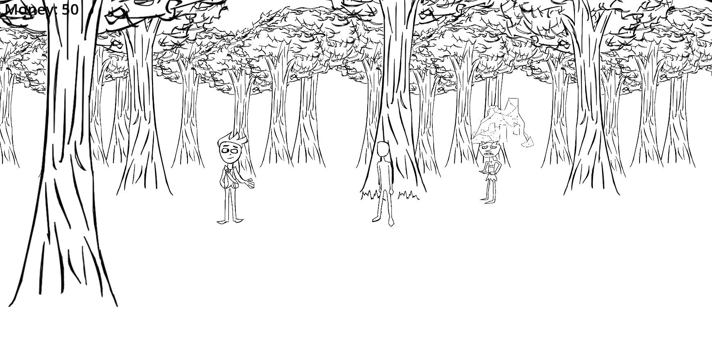
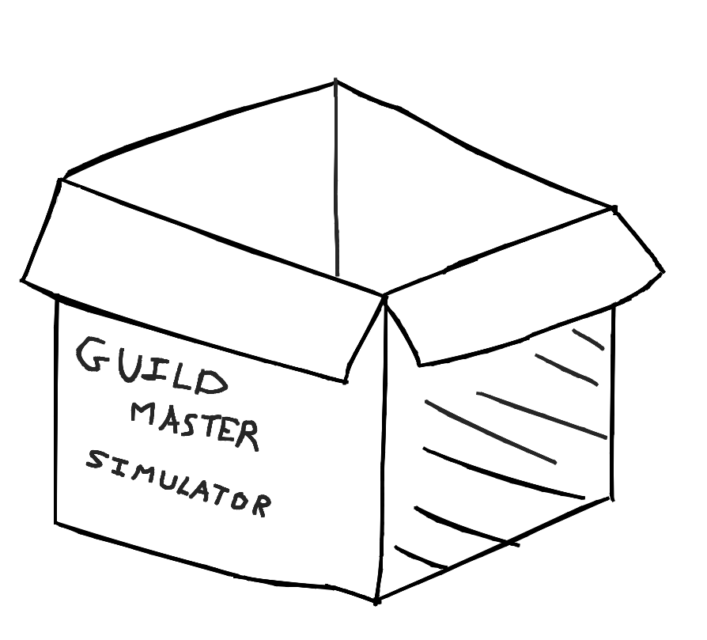

Hey everyone, I did a small bit of work tonight and wanted to share it
To address the title of this post, I'm honestly not sure if I'd call this the "beginning" of wherever this is going. But I don't know when the beginning would be, is the thing. It could have been months ago when I started getting more in touch with my creative side. It could be months from now when I finally have a vision for what this project is going to be. But well, I've gotta start somewhere.
So what have I made? Well, a little forest. A little forest with Jay and the player in it. There's also a little goblin but he's just kinda vibin.

You'll also notice I put the word "Rough" in the title. It sort of applies to both the actual look of the game right now, *and* the creative process behind it in general. Reason being: you may recall in my last blog post I said I decided that this game was going to be a guildmaster simulator. Well, I actually amn't sure about that. In the sense that, what I'm making doesn't come from some external inspiration. This is quite a pickle to articulate, but it's like... saying something like that is putting it in a box. A mold that doesn't quite fit.
To expand on that, imagine you have something. You don't have a way to categorise this something, so you pick the closest category you do have. Now, there are expectations for how you treat this something. It doesn't have the chance to become something new. That's basically how I feel. I don't think I can actually name what it is I'm making, because the second I do that, it has limitations.

Nevertheless, there's a physical world now. Things are starting to feel more real, albeit slowly. Next I think I'm going to give the player a proper walking animation, but after that, I'm not sure. Building, managing, simulating. I have no idea what the gameplay for this game is going to be. No matter what, I want the game to tell a story. The story of you, the player. It's why I didn't add details to their sprite. This isn't someone else's story. Its yours.
Anyways, thanks for reading. I would like to pickup the pace a bit on working on this thing, but also it's hard to get motivated when I feel directionless. Though I think that'll come as I lay more solid ground. Catch you in the next one :)